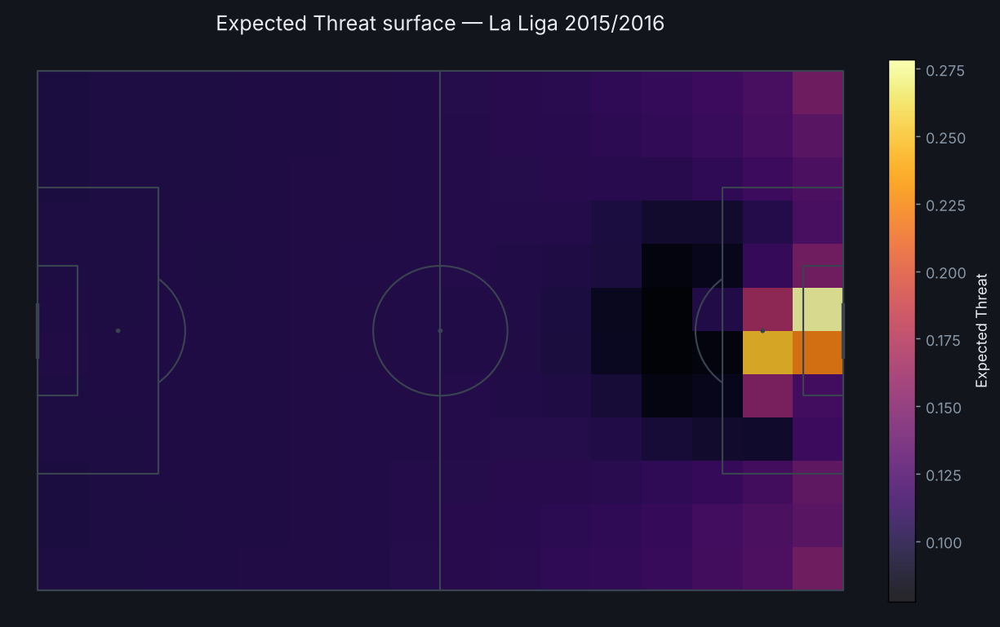
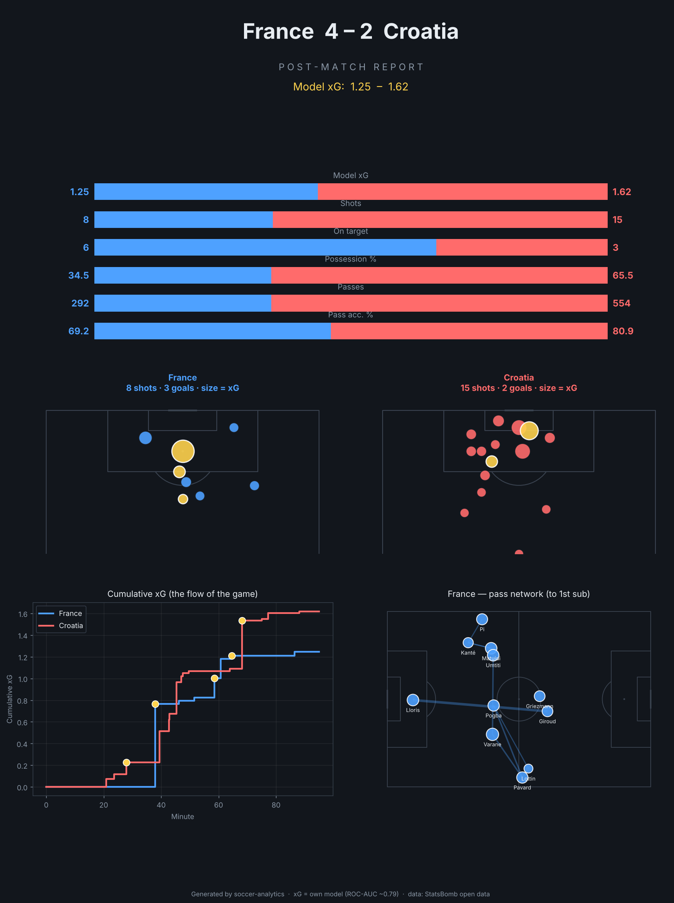
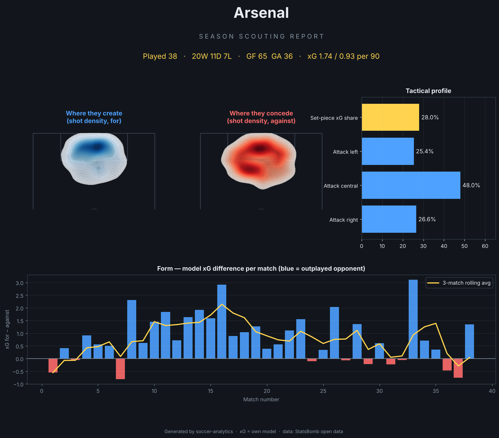

At a glance
0.7948
xG model ROC-AUC
pro range 0.78–0.82
100,379
xG shots trained
52.6%
Predictor accuracy
baseline 45.1%
0.1994
Predictor RPS
baseline 0.2268
0.236
Home advantage
Premier League 2015/2016
Predicted fixtures · Premier League 2015/2016 model
| Home | Away | Home win | Draw | Away win | Exp. goals | Likeliest |
|---|---|---|---|---|---|---|
| Arsenal | Aston Villa | 69% | 22% | 9% | 1.82–0.51 | 1-0 |
| Arsenal | Bournemouth | 60% | 24% | 16% | 1.81–0.83 | 1-0 |
| Arsenal | Chelsea | 51% | 27% | 22% | 1.51–0.91 | 1-1 |
| Arsenal | Crystal Palace | 61% | 26% | 14% | 1.62–0.63 | 1-0 |
| Arsenal | Everton | 47% | 25% | 28% | 1.73–1.28 | 1-1 |
| Arsenal | Leicester | 31% | 30% | 39% | 1.05–1.22 | 1-1 |
| Arsenal | Liverpool | 59% | 23% | 18% | 1.88–0.93 | 1-1 |
| Arsenal | Man City | 40% | 28% | 32% | 1.35–1.18 | 1-1 |
| Arsenal | Man United | 43% | 31% | 26% | 1.19–0.85 | 1-0 |
| Arsenal | Newcastle | 68% | 21% | 12% | 2.03–0.72 | 2-0 |
Fitted team strengths
| Team | Attack | Defence |
|---|---|---|
| Everton | +0.42 | +0.18 |
| Tottenham | +0.39 | -0.40 |
| Leicester | +0.38 | -0.32 |
| Man City | +0.34 | -0.07 |
| Arsenal | +0.13 | -0.18 |
| West Ham | +0.12 | -0.03 |
| Liverpool | +0.10 | +0.27 |
| Chelsea | +0.08 | +0.05 |
| Southampton | +0.03 | -0.35 |
| Man United | +0.01 | -0.19 |
| Sunderland | +0.01 | +0.46 |
| Bournemouth | -0.01 | +0.23 |
Expected Threat — ball progression
xT surface

Top ball progressors (total xT added)
| Player | Team | xT |
|---|---|---|
| Jorge Resurrección Merodio | Atlético Madrid | +3.49 |
| Gonzalo Castro Irizábal | Málaga | +2.77 |
| José Luis Morales Nogales | Levante UD | +2.60 |
| Pablo Sarabia García | Getafe | +2.44 |
| Toni Kroos | Real Madrid | +2.43 |
| Jonathan Viera Ramos | Las Palmas | +2.36 |
| José Antonio García Rabasco | Levante UD | +2.32 |
| Roberto Trashorras Gayoso | Rayo Vallecano | +2.28 |
| Éver Maximiliano David Banega | Sevilla | +2.26 |
| Filipe Luís Kasmirski | Atlético Madrid | +2.22 |
Sample outputs

